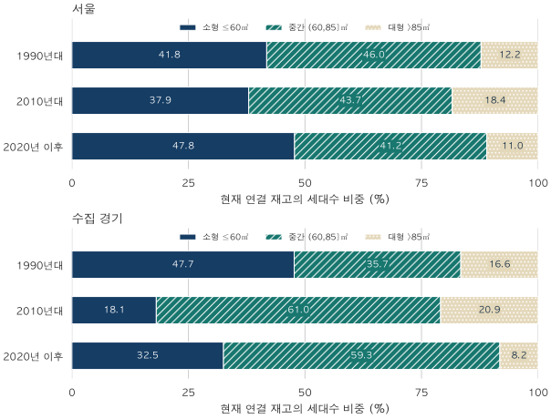

단지 조건 비교 · 승인 연대와 집의 크기
2020년 이후 아파트는 소형 비중이 클까? 서울·경기 재고 비교
서울·수집 경기의 현재 연결 재고를 사용승인 연대로 나눕니다. 한 단지를 제외해도 최근 연대의 소형 비중은 높고 대형 비중은 낮습니다. 세대수 분모,84㎡대 구성,제외 기준과 한계를 확인하세요.
분석 기간 · 1990년대·2010년대·2020년 이후 승인 재고 | 보유 자료 스냅샷 생성 · 보관 자료 2026-04-24~2026-10-02
최근 지어진 아파트는 작은 집과 큰 집으로 나뉘는 추세일까요? 현재 남아 있고 면적별 세대수를 연결할 수 있는 서울·경기 아파트를 사용승인 연대별로 비교했습니다. 2020년 이후 군은 2010년대 군보다 소형 비중이 높고, 대형 비중은 낮았습니다. 당시 지어진 모든 집의 공급 통계와는 다른 질문입니다.
무엇을 한 채로 세었나요?
기준은 단지별 정확한 전용면적에 연결된 세대수입니다. 거래가 많이 된 집에 더 큰 가중치를 주지 않고, 각 면적의 세대수를 더했습니다. 가격이나 매매 여부로 재고를 골라내지 않았습니다. 예를 들어 소형 비중은 ‘해당 승인 연대의60㎡ 이하 세대수 ÷ 해당 연대의 전체 연결 세대수’입니다.
면적은 소형60㎡ 이하, 중간60㎡ 초과~85㎡ 이하, 대형85㎡ 초과로 나눕니다. 정확히60㎡는 소형, 정확히85㎡는 중간입니다. 이 세 구간은 합쳐100%가 됩니다. 별도로 보는 84㎡대는84㎡ 이상~85㎡ 미만이며 중간 구간의 일부입니다. 공급면적이나 광고의 평형과 혼용하지 않습니다.
승인 연대는 채택한 면적 자료와 같은 시점의 K-apt 사용승인일로 정했습니다.1990년대는1990~1999년,2010년대는2010~2019년,2020년 이후는2020년부터 각 자료 시점까지입니다. 마지막 군은 아직 끝나지 않은 연대이므로 세대수를10년 단위 공급 속도로 비교할 수 없습니다.
2020년 이후 군은 소형과 대형이 함께 많아졌나요?
아닙니다. 두 지역 모두 소형 비중이 높고 대형 비중은 낮습니다. 그림은 현재 재고를 세 승인 연대로 나눈 단면 비교입니다. 같은 주택들이 시간이 흐르며 작아졌다는 뜻은 아닙니다.

| 승인 연대 | 세대수 | 소형 ≤60㎡ | 중간 (60,85]㎡ | 대형 >85㎡ | 84㎡대 |
|---|---|---|---|---|---|
| 1990년대 | 320,966 | 41.79% | 45.99% | 12.22% | 37.30% |
| 2010년대 | 258,026 | 37.93% | 43.66% | 18.41% | 39.98% |
| 2020년 이후 | 138,775 | 47.77% | 41.24% | 10.99% | 35.22% |
서울의 소형 비중 차이는 +9.84%포인트입니다. 중간 비중은43.66%에서41.24%, 대형 비중은18.41%에서10.99%로 낮습니다. 대형 차이는−7.42%포인트입니다. 소형이 차지하는 몫이 커졌지만, 큰 집의 몫도 함께 커진 양극화는 아닙니다.
| 승인 연대 | 세대수 | 소형 ≤60㎡ | 중간 (60,85]㎡ | 대형 >85㎡ | 84㎡대 |
|---|---|---|---|---|---|
| 1990년대 | 558,926 | 47.68% | 35.75% | 16.57% | 26.01% |
| 2010년대 | 658,904 | 18.10% | 60.99% | 20.90% | 47.20% |
| 2020년 이후 | 340,005 | 32.52% | 59.29% | 8.19% | 40.99% |
수집 경기의 소형 비중 차이는 +14.42%포인트입니다. 중간 비중은60.99%에서59.29%로 비교적 비슷하고, 대형 비중은20.90%에서8.19%로 낮습니다. 대형 차이는−12.71%포인트입니다. 이 글의 경기는 자료가 수집된36개 지역이며, 경기도 전체 주택을 대표하는 표본이라고 보장하지 않습니다.
좁은 화면에서는 표를 좌우로 움직일 수 있습니다. 비중 차이는 표시값을 뺀 것이 아니라 원래 정수 세대수로 계산한 뒤 반올림했습니다.84㎡대는 중간 구간과 겹치므로 네 비중을 합하지 않습니다.
1990년대보다 2010년대에84㎡대가 더 집중됐나요?
두 지역 모두84㎡대의 세대수 비중이 높지만, 차이의 크기는 다릅니다. 서울은37.30%에서39.98%로 2.68%포인트, 수집 경기는26.01%에서47.20%로 21.18%포인트 높습니다. 서울까지 경기와 같은 크기의 변화라고 묶어 말하면 중요한 지역 차이를 놓칩니다.
1990년대 군에서2010년대 군으로 비교하면 소형 비중은 서울41.79%에서37.93%, 수집 경기47.68%에서18.10%로 낮습니다. 반면 다음 연대 비교에서는 다시 높습니다. ‘최근 지어진 집일수록 항상 소형이 많다’는 한 방향의 설명도 이 세 군을 모두 설명하지 못합니다.
84㎡대 비중 역시2020년 이후 군에서는 서울35.22%, 수집 경기40.99%로2010년대보다 낮습니다. 수요 변화, 분양 전략, 임대주택 구성이나 건설 지역의 이동이 영향을 주었을 수 있지만, 이 자료만으로 각각의 원인과 기여도를 분리하지는 못했습니다.
한 단지를 빼도 결론이 남나요?
남습니다. 공개 표를 만들기 전에 기존 집계와 결합하면 한 단지의 재고가 따로 드러나는 조합을 발견했습니다. 이번 표는 그 단지를 제외하고 공개 범위를 두 광역·세 연대의 핵심 면적 구성으로 제한했습니다. 제외 대상은 결과를 크게 보이게 하는 순서로 고른 단지가 아닙니다. 연도 기준 차이에서 확인된 대상을 재검토 전에 고정했습니다.
제외 전후의 핵심 비교 방향은 같았습니다. 제한 자료에서 다른 단지도 차례로 하나씩 제외해 보았으며, 두 지역의 소형·중간·대형·84㎡대 비교 방향은 유지됐습니다. 이는 한 단지에 결론이 매달려 있는지 확인한 영향 검토입니다. 여러 단지가 체계적으로 빠져 생기는 편향까지 없앴다는 뜻은 아닙니다.
이 결과를 ‘통계적 유의성이 확보됐다’고 쓰지는 않습니다. 현재 연결 재고는 전체 주택에서 무작위로 뽑은 표본이 아닙니다. 같은 단지의 많은 세대를 서로 독립된 표본으로 간주해 유의확률을 계산하면 근거보다 강한 확신을 줄 수 있습니다. 여기서 확인한 것은 제한 모집단의 실제 비중 차이와 한 단지 제외에 대한 방향의 안정성입니다.
더 큰 한계는 남아 있습니다. 면적 정보가 연결되지 않은 재고와 이미 멸실된 주택은 이 표에서 빠집니다. 오래된 군과 최근 군의 지역 구성도 다릅니다. 지역 비중을 고정하는 검토는 두 군을 함께 비교할 수 있는 지역의 재고 비중이 정한 기준에 미치지 못해 광역 보정 결과로 제시하지 않았습니다. 따라서 이 차이를 순수한 건축 연대 효과나 과거 공급 구성으로 읽으면 안 됩니다.
내 후보를 비교할 때는 무엇을 먼저 확인하나요?
- 전용면적의 경계를 맞춥니다. ‘소형’이라는 말 대신60㎡ 이하인지,84㎡대인지 실제 숫자를 적습니다.
- 같은 생활권 안에서 승인 시기를 봅니다. 광역 구성 차이가 내 동네에도 그대로 적용된다고 가정하지 않습니다.
- 재고와 매물을 나눕니다. 특정 면적의 집이 많아도 지금 살 수 있는 매물이나 예산 안의 집이 많다는 뜻은 아닙니다.
- 연식과 가격은 따로 확인합니다. 이 글에는 가격·수리 상태·평면의 효용을 비교한 결과가 없습니다. 실제 후보의 거래가격과 조건을 추가로 맞춰 보세요.
원천·제외 기준·검증·공개 범위 펼치기
- 자료: 국토교통부 단지 목록과 건축물대장, K-apt 기본정보·면적별 세대수를 연결한 자체 집계입니다. K-apt 공식 소개는 공동주택 관리정보 공개 시스템의 범위를 설명합니다. 주택 전수조사의 근거로 사용하지 않습니다.
- 시점: 보관 자료는2026년4월24일·6월26일·8월28일·10월2일입니다. 단지코드별 최신의 전체 면적 자료를 하나만 선택했습니다. 같은 면적의 행은 세대수를 합산하며, 서로 다른 시점의 일부 면적을 이어 붙이지 않습니다. 사용승인일은 같은 자료 시점의 기본정보에서 연결했습니다. 당시 실시간으로 알 수 있었던 정보만의 분석은 아닙니다.
- 범위: 서울25구와 수집 경기36개 지역의 현재 연결 재고입니다. 사용승인일이 없거나 유효하지 않은 재고를 건축년도로 대신 채우지 않았습니다. 전체 승인 연대 중1990년대·2010년대·2020년 이후를 비교하며, 그 밖의 연대와 미상은 이 표의 분모에 들어가지 않습니다.
- 추가 제외: 서울에서 사용승인은2010년 이후지만 단지 목록의 건축년도는 그 집합에 속하지 않아 기존 집계와의 차집합에 남는 한 단지를 제외했습니다. 잘못된 원자료라고 단정하거나 원천 값을 고친 것이 아닙니다. 한 단지 제외와 핵심 표로의 범위 제한을 함께 적용한 결과입니다.
- 검증과 공개: 보관 원천과 재고 집계를 재현하고, Python 집계와 독립 SQL의 세대수를 대조했습니다. 공개 범주와 그 여집합의 세대수·단지수 지원을 확인하고, 기존 공개 세대수와 새 표를 함께 둔 정확한 선형 역산 검사를 거쳤습니다. 단지 식별자·단지별 세대수·지역 세부표·제외 전후의 정확한 차이는 공개하지 않습니다. 공개6행 집계JSON에는 분모와 네 면적 범주의 정수 세대수가 있습니다.
- 해석: 세대수 가중 기술통계입니다. p값·신뢰구간·연대의 인과효과는 추정하지 않았습니다. 한 단지씩 제외한 결과는 방향 검토로만 사용하고, 누락 재고에 대한 대표성을 보증하지 않습니다. 표와 본문은 마지막에 소수 둘째 자리까지 반올림합니다.
분석·집필: 파파펭귄 (Nobot Kang). 에이전트로 원천 대조·영향 검토·계산·초안과 공개 범위 검증을 보조했습니다. 공식 원천 확인일:2026-10-10.